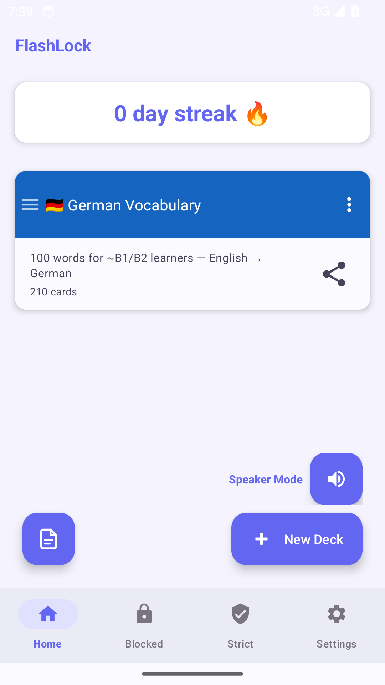
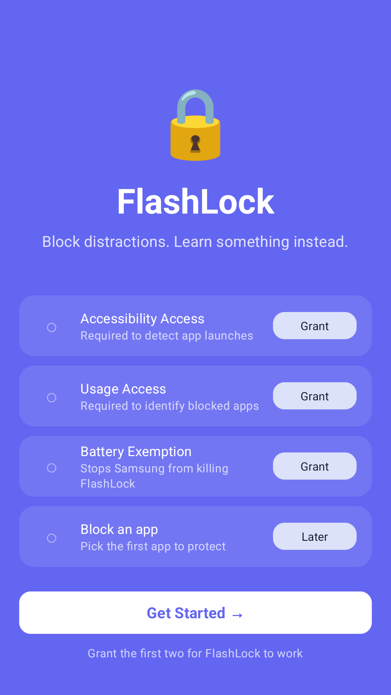
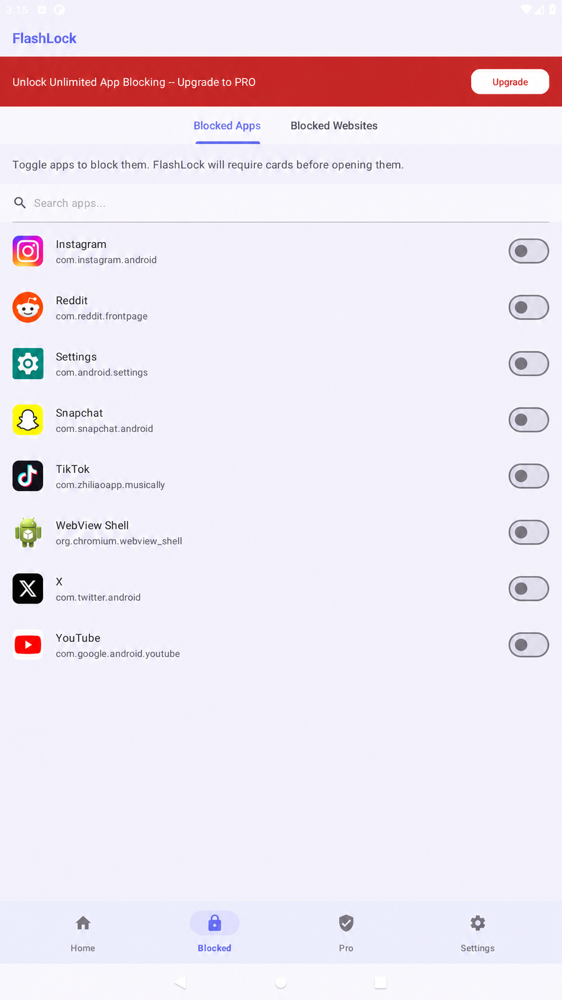

Pick distractions
Choose the apps and websites that steal your attention.
Android focus + flashcards
FlashLock turns the reflex to open a distracting app into a short study session—so every interruption can build your memory instead.

A better loop
Choose the apps and websites that steal your attention.
Create or import flashcards for anything worth learning.
Complete a short study session when you open something blocked.
Inside the app
FlashLock guides you through Android setup, keeps your decks close, and puts focus controls in one clear place.


Built with boundaries
FlashLock explains its Android permissions before setup. Read the full policy for details about Crashlytics and Google Play Billing.
Read the privacy policy →